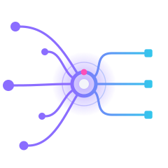

Governança de dados
Regras, origem e dono de cada número.
- Regras de negócio documentadas
- Cadastros e planilhas de apoio com dono e histórico
Eu organizo, confiro e documento os dados da sua empresa. Quem constrói é quem atende.

O relatório demora e ninguém sabe dizer de onde vem cada número.
Cada área tem a sua própria versão do mesmo indicador.
Planilhas que só uma pessoa entende e que quebram quando ela sai.
Atualização manual todo mês, com o risco de erro que isso traz.
É aí que eu entro: arrumar a casa dos dados antes de construir o painel.
Cada uma resolve uma parte do caminho entre o dado bruto e a decisão.
Regras, origem e dono de cada número.
Rotinas que rodam sozinhas e avisam quando falham.
Fluxo organizado da origem ao relatório.
Painéis que a diretoria consegue conferir.
Eu prefiro dado conferido a painel bonito. Por isso o trabalho segue sempre a mesma ordem.
Descubro as regras de negócio e de onde vem cada número, antes de abrir qualquer ferramenta.
Padronizo cadastros e indicadores para todas as áreas olharem o mesmo número.
Construo a solução e confiro o resultado contra a origem, linha por linha quando preciso.
Entrego documentado, para a sua empresa não depender de uma pessoa só.
Estou organizando os primeiros trabalhos para mostrar aqui, com dados de exemplo e sem expor nenhum cliente.
Escopo e prazo definidos para resolver um problema específico: um painel, uma carga, uma rotina automatizada.
Um número de horas por mês para evoluir e sustentar o que já existe, com entregas documentadas.
Não tenho preço de tabela, porque cada empresa começa de um ponto diferente. Conte o seu cenário e eu respondo com os próximos passos.
Sou o Davi, analista de dados e fundador da Nexus Intelligence.
Atuo no ciclo completo do dado, do mapeamento das regras de negócio ao painel para diretoria e gerência. Prefiro dado conferido a painel bonito, e documento o que entrego, para a empresa não depender de uma pessoa só.
Uma mensagem curta basta: o que acontece hoje com os seus dados e o que você precisa decidir. Eu respondo com os próximos passos.